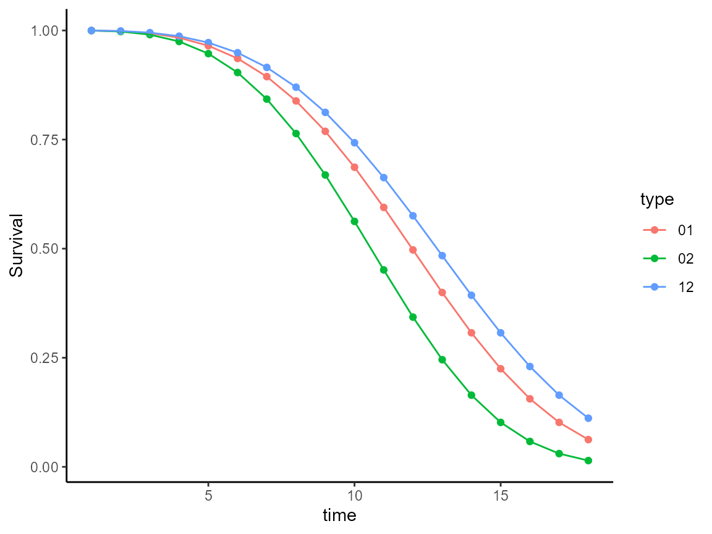
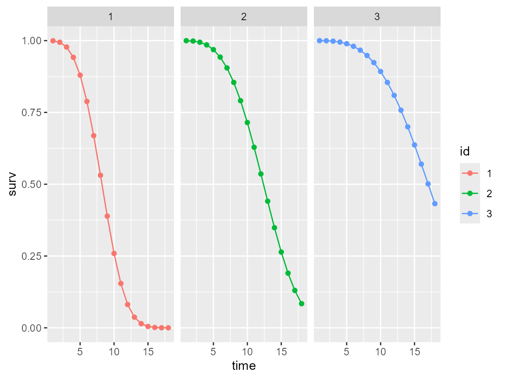
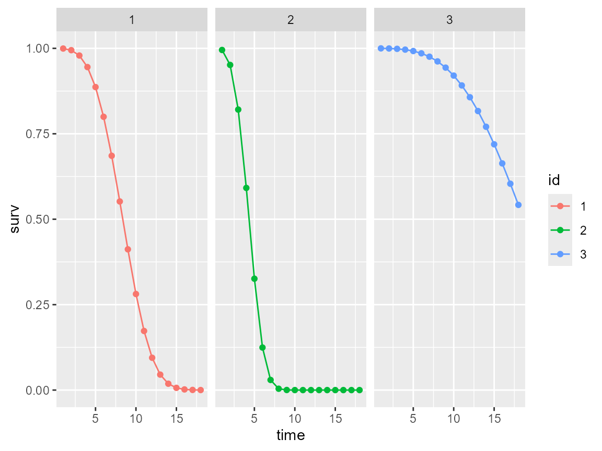
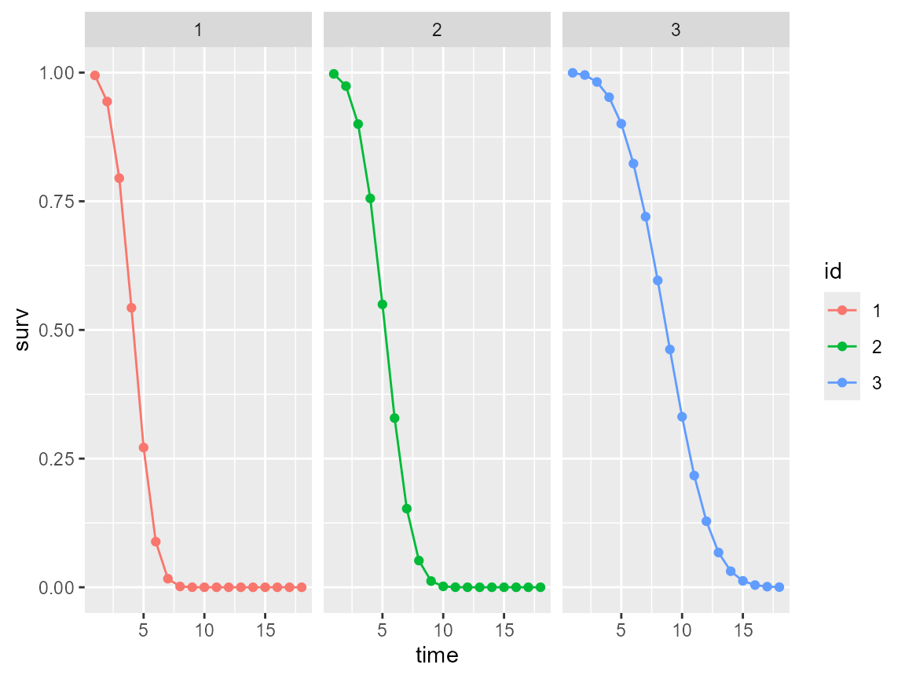

Reg-IDM-ICT-example.RmdThe HIDeM package is avaible on github, using the following commands :
remotes::install_github("arianebercu/HIDeM")The HIDeM package depends on other R package, namely :
We are using foreach, parallel and doParallel for parallelizing some time consuming functions, mvtnorm for generating random parameters in simulation, marqLevAlg (>2.0) for the numerical optimization.
License: GPL (>= 2) RoxygenNote: 7.3.2 Encoding: UTF-8
We have a sample of N=2000 individuals, followed during 18 years with visit scheduled every 2.5 years (0.5 variability) and at each visit a probability of being lost to follow-up of 5%.
In IDM, we simulate transition intensities defined as,
In this example, we choose to simulate 50 covariates having an independent Gaussian distribution (centered and reduced), . Each covariate has a transition specific effect, on transition healthy diseased , healthy deceased and diseased deceased .
| Transition | … | … | … | |||||||||||||||
|---|---|---|---|---|---|---|---|---|---|---|---|---|---|---|---|---|---|---|
| 0.8 | 0.8 | 0.8 | 0 | 0 | -0.8 | -0.5 | -0.5 | 0 | 0 | 0.0 | 0.0 | 0.0 | 0 | 0 | ||||
| 0.0 | 0.8 | 0.8 | 0 | 0 | 0.0 | 0.0 | 0.5 | 0 | 0 | -0.8 | -0.5 | 0.0 | 0 | 0 | ||||
| 0.0 | 0.8 | 0.0 | 0 | 0 | 0.0 | -0.5 | 0.0 | 0 | 0 | 0.0 | -0.5 | -0.8 | 0 | 0 |
| Transition | … | … | ||||||||||
|---|---|---|---|---|---|---|---|---|---|---|---|---|
| 0.0 | 0.0 | 0.0 | 0 | 0 | 0.0 | -0.5 | 0.0 | 0 | 0 | |||
| 0.8 | 0.8 | 0.0 | 0 | 0 | 0.0 | 0.5 | 0.5 | 0 | 0 | |||
| 0.0 | 0.8 | 0.8 | 0 | 0 | -0.5 | -0.5 | 0.0 | 0 | 0 |
Following, the baseline transition intensity follows a Weibull distribution,
such that, , and .
library(HIDeM)
#> Loading required package: prodlim
n_var<-50
BETA01<-rep(0,n_var)
BETA02<-rep(0,n_var)
BETA12<-rep(0,n_var)
BETA01[1:3]<-c(0.8,0.8,0.8)
BETA02[1:3]<-c(0,0.8,0.8)
BETA12[1:3]<-c(0,0.8,0)
BETA01[11:13]<-c(-0.8,-0.5,-0.5)
BETA02[11:13]<-c(0,0,0.5)
BETA12[11:13]<-c(0,-0.5,0)
BETA01[21:23]<-c(0,0,0)
BETA02[21:23]<-c(-0.8,-0.5,0)
BETA12[21:23]<-c(0,-0.5,-0.8)
BETA01[31:33]<-c(0,0,0)
BETA02[31:33]<-c(0.8,0.8,0)
BETA12[31:33]<-c(0,0.8,0.8)
BETA01[41:43]<-c(0,-0.5,0)
BETA02[41:43]<-c(0,0.5,0.5)
BETA12[41:43]<-c(-0.5,-0.5,0)
id02<-paste0("X",which(BETA02!=0))
id01<-paste0("X",which(BETA01!=0))
id12<-paste0("X",which(BETA12!=0))
cov<-matrix(0,ncol=n_var,nrow=n_var)
diag(cov)<-1
#scale.waittime=0.18,shape.waittime=1.8,
#scale.lifetime=0.15,shape.lifetime=2.3,
#scale.illtime=0.14,shape.illtime=2.2,
rep<-2
simu<-HIDeM::simulateIDM(n=2000,seed=rep,
scale.waittime=0.07,shape.waittime=3.4,
scale.lifetime=0.085,shape.lifetime=3.4,
scale.illtime=0.075,shape.illtime=3.4,
prob.censoring=0.05,
n.inspections=8,
administrative.censoring = 18,
schedule=2.5,punctuality=0.5,nvar=n_var,mean=rep(0,n_var),cov=cov,
x01=id01,x02=id02,x12=id12,
beta01=BETA01[BETA01!=0],beta02=BETA02[BETA02!=0],
beta12=BETA12[BETA12!=0])In the output , you have two elements : the dataset $data and explanatory plots $plot.
head(simu$data)
#> administrative.censoring censtime X1 X2 X3
#> 1 18 17.82195 0.11003565 0.88847608 0.2626667
#> 2 18 17.69103 0.80872054 -0.01815571 0.7039617
#> 3 18 12.56750 -0.08881676 -1.43234804 -0.2171928
#> 4 18 17.86267 0.37026126 -0.93488728 -2.1802342
#> 5 18 12.90958 0.40876006 0.65185053 1.8164008
#> 6 18 17.84424 -0.46140748 1.21192198 -0.7193277
#> X4 X5 X6 X7 X8 X9
#> 1 -0.4537282 0.1344390 1.0439527 1.1015952 1.09810420 -1.01576090
#> 2 -0.4006717 -1.2599078 1.4562122 -0.1453585 0.12262308 -0.27469994
#> 3 -1.8173789 -1.3909747 -0.3834196 0.3288282 -0.45951031 -0.04665278
#> 4 -0.7843964 1.7404905 0.4096513 -1.6242129 1.16709374 1.19147454
#> 5 -0.5119064 -0.5415008 -0.6417391 0.3996244 0.09093332 1.39108508
#> 6 -2.9254275 -1.2615707 1.1549423 -1.5908737 0.77133904 -1.91238494
#> X10 X11 X12 X13 X14 X15
#> 1 -1.4181857 0.8410758 0.033104620 -0.8546097 0.21510070 -0.14925083
#> 2 -0.9131192 0.3866649 0.001321339 0.4444228 -1.35963066 -0.05169343
#> 3 0.9264366 0.2244227 -0.118933200 -0.4388973 -0.37139426 0.66795814
#> 4 -1.2540619 1.1401437 0.104256321 1.1787564 0.27316333 0.96132429
#> 5 0.2834529 -0.9124940 0.659282801 -0.6651984 -2.48827581 -0.18641962
#> 6 2.0633930 0.3138239 -0.137820679 1.5212964 0.08446438 -1.10615873
#> X16 X17 X18 X19 X20 X21
#> 1 1.34022520 1.1410183 1.1305911 -0.1011244 -0.7121795 -1.06698850
#> 2 -0.38869647 1.9333108 0.9709379 0.2313941 -0.1117647 0.47322567
#> 3 -0.80339903 2.0529007 2.1212976 0.1951305 0.5932131 -0.08028486
#> 4 0.18567908 -0.4628326 0.4522474 -1.2291170 -0.8527420 0.48858136
#> 5 -0.17196715 1.6583004 0.1726265 0.9553336 -0.1088505 -0.46899819
#> 6 -0.09814262 1.1832686 -1.1514940 0.3006883 -1.2417545 1.55539294
#> X22 X23 X24 X25 X26 X27 X28
#> 1 -1.4464460 -0.6828503 -0.7882967 0.5158212 -0.97968392 -0.4054548 1.2217143
#> 2 -1.7354146 -0.3973901 -1.4616460 -0.1061886 1.13613013 1.2096045 -1.0721394
#> 3 -1.8093657 -1.1012463 -1.2261102 0.5881068 0.83011439 -1.5639193 -0.3104641
#> 4 0.3600848 1.6657697 0.6245576 1.8136031 0.04330697 0.5026616 1.0914668
#> 5 -0.3582909 -1.6195286 -0.2432343 -0.1331454 1.02810076 0.8638691 0.3162520
#> 6 1.5306088 -0.5069776 -0.9310536 1.3117807 -0.07895539 -0.2692194 2.0077155
#> X29 X30 X31 X32 X33 X34
#> 1 1.2332815 -1.6915696 -1.0322074 0.199524889 0.9604876 0.97031060
#> 2 -1.1597015 -0.5984877 -0.8571623 2.069386739 1.0337467 1.35482082
#> 3 -1.7488465 0.3649211 -0.3844939 -0.520146673 -0.4956850 0.12675127
#> 4 1.2671623 1.2428643 0.7987524 -1.251652421 0.5952119 0.52055591
#> 5 -0.2514775 0.1908916 0.1076132 1.169688169 -0.2250013 -0.01395286
#> 6 0.8306908 0.5063441 -1.0057373 -0.007152392 0.6018516 -0.10723978
#> X35 X36 X37 X38 X39 X40 X41
#> 1 1.796896 -1.2606268 1.1351026 0.4972043 -1.5331327 0.68066100 -0.8213516
#> 2 -1.121241 -1.0220906 0.1681037 -1.4587660 -1.0064947 -0.04925656 -0.3601769
#> 3 -2.075977 -0.6436006 -0.5698265 1.0280139 1.9277506 0.21766920 -2.6606788
#> 4 -1.227818 0.2957489 -0.2981521 0.5994889 0.4500641 1.69927381 -0.8259098
#> 5 1.929720 -0.1287624 -0.8448102 0.9285087 -0.3049276 0.24587686 0.5139684
#> 6 -0.273591 -0.4395671 0.9816650 -0.1831086 2.1493693 0.47407436 0.2516739
#> X42 X43 X44 X45 X46 X47
#> 1 -1.06445554 -0.16242828 1.4948667 1.3404677 -0.02165721 -1.00846517
#> 2 1.55389308 0.03381937 0.8173279 -1.1157120 0.98448042 0.73942441
#> 3 -0.19036960 -1.09362512 -0.1539752 1.5065385 -0.68091825 0.04548124
#> 4 0.66743315 0.57234695 0.1833405 -1.6099660 -0.26052233 -0.46466759
#> 5 -0.01135271 -1.27902820 -0.4150356 0.9829932 -0.58467693 -1.32641715
#> 6 -0.77262138 -0.29423746 -0.8517042 -0.5279514 0.07643917 -1.33313481
#> X48 X49 X50 illtime illstatus lifetime L
#> 1 0.6408445 -1.8923489 -0.89691455 5.859810 1 6.751371 5.243818
#> 2 -1.6013778 1.2928042 0.18484918 7.673935 0 3.141535 2.965152
#> 3 -0.7778154 -0.6182543 1.58784533 14.148797 1 15.031181 12.567500
#> 4 -1.6473925 1.0409383 -1.13037567 46.770059 0 14.173718 12.900042
#> 5 0.1542662 1.1758795 -0.08025176 4.334944 1 5.140210 2.779674
#> 6 -1.1756313 -1.5018321 0.13242028 12.686026 1 13.426249 12.593408
#> R observed.lifetime seen.ill seen.exit T01 T02 T12
#> 1 5.243818 6.751371 0 1 5.859810 10.240752 6.751371
#> 2 2.965152 3.141535 0 1 7.673935 3.141535 3.141535
#> 3 12.567500 15.031181 0 1 14.148797 25.415135 15.031181
#> 4 12.900042 14.173718 0 1 46.770059 14.173718 14.173718
#> 5 2.779674 5.140210 0 1 4.334944 6.871252 5.140210
#> 6 12.593408 13.426249 0 1 12.686026 30.010175 13.426249
#> id.nodem.death
#> 1 1
#> 2 0
#> 3 0
#> 4 0
#> 5 1
#> 6 1
library(gtsummary)
library(gt)
library(dplyr)
#>
#> Attaching package: 'dplyr'
#> The following objects are masked from 'package:stats':
#>
#> filter, lag
#> The following objects are masked from 'package:base':
#>
#> intersect, setdiff, setequal, union
var<-paste0("X",c(1:n_var))
summaries<-simu$data[,!colnames(simu$data)%in%var] %>%
mutate(illstatus = ifelse(illstatus==1,"Ill","Healthy"),
id.nodem.death=ifelse(id.nodem.death==1,"Yes","No"))%>%
rename("L = time of last visit illness-free" = L)%>%
rename("R = diagnosis visit time" = R)%>%
rename("illstatus = true indicator of illness "=illstatus)%>%
rename("observed.lifetime = time of death" = observed.lifetime)%>%
rename("lifetime = time of death with IC on illness" = lifetime)%>%
rename("T01 = simulated time on transition to illness"=T01)%>%
rename("T02 = simulated time on transition to death illness-free"=T02)%>%
rename("T12 = simulated time on transition to death with illness"=T12)%>%
rename("administrative.censoring = 18"=administrative.censoring)%>%
rename("censtime = simulated last visit"=censtime)%>%
rename("id.nodem.death = illness not observed due to death"=id.nodem.death)%>%
mutate(seen.ill = ifelse(seen.ill==1,"Ill","Healthy"),
seen.exit=ifelse(seen.exit==1,"Death","Alive"))%>%
tbl_strata(
strata = seen.ill,
.tbl_fun =
~ .x %>%
tbl_summary(by = seen.exit,
type = list(where(is.numeric) ~ "continuous2"),
statistic = list(
all_categorical() ~ "{n} ({p}%)"
),
digits = all_continuous() ~ 2),
.header = "**{strata}**, N = {n}"
) %>%
modify_caption("Characteristics of individuals in simulated dataset")
summaries| Characteristic |
Healthy, N = 1457
|
Ill, N = 543
|
||
|---|---|---|---|---|
|
Alive N = 1741 |
Death N = 1,2831 |
Alive N = 2031 |
Death N = 3401 |
|
| administrative.censoring = 18 | ||||
| Median (Q1, Q3) | 18.00 (18.00, 18.00) | 18.00 (18.00, 18.00) | 18.00 (18.00, 18.00) | 18.00 (18.00, 18.00) |
| censtime = simulated last visit | ||||
| Median (Q1, Q3) | 17.57 (5.35, 17.77) | 17.63 (10.37, 17.82) | 17.69 (17.56, 17.86) | 17.68 (17.54, 17.82) |
| illtime | ||||
| Median (Q1, Q3) | 22.13 (17.04, 30.83) | 12.99 (9.14, 18.32) | 9.38 (6.68, 12.74) | 5.95 (4.19, 8.75) |
| illstatus = true indicator of illness | ||||
| Healthy | 123 (71%) | 1,057 (82%) | ||
| Ill | 51 (29%) | 226 (18%) | 203 (100%) | 340 (100%) |
| lifetime = time of death with IC on illness | ||||
| Median (Q1, Q3) | 25.46 (20.32, 31.00) | 7.43 (4.97, 10.60) | 23.71 (20.09, 29.08) | 11.51 (8.62, 14.28) |
| L = time of last visit illness-free | ||||
| Median (Q1, Q3) | 17.57 (5.35, 17.77) | 5.22 (2.74, 7.83) | 7.83 (5.27, 12.52) | 5.18 (2.70, 7.65) |
| R = diagnosis visit time | ||||
| Median (Q1, Q3) | 17.57 (5.35, 17.77) | 5.22 (2.74, 7.83) | 10.32 (7.69, 15.01) | 7.66 (5.24, 10.22) |
| observed.lifetime = time of death | ||||
| Median (Q1, Q3) | 18.00 (18.00, 18.00) | 7.43 (4.97, 10.60) | 18.00 (18.00, 18.00) | 11.51 (8.62, 14.28) |
| T01 = simulated time on transition to illness | ||||
| Median (Q1, Q3) | 22.13 (17.04, 30.83) | 12.99 (9.14, 18.32) | 9.38 (6.68, 12.74) | 5.95 (4.19, 8.75) |
| T02 = simulated time on transition to death illness-free | ||||
| Median (Q1, Q3) | 23.97 (19.35, 30.19) | 7.73 (5.03, 11.28) | 19.08 (13.60, 25.68) | 13.10 (8.94, 18.76) |
| T12 = simulated time on transition to death with illness | ||||
| Median (Q1, Q3) | 25.46 (20.32, 31.00) | 7.43 (4.97, 10.60) | 23.71 (20.09, 29.08) | 11.51 (8.62, 14.28) |
| id.nodem.death = illness not observed due to death | 0 (0%) | 132 (10%) | ||
| No | 203 (100%) | 340 (100%) | ||
| 1 n (%) | ||||
In $data, we have a line per individual observation with :
In $plot, we have 7 elements :
simu$plot[[1]]
head(simu$plot[[2]])
#> time surv id
#> 1 1 0.9994622 1
#> 2 2 0.9943380 1
#> 3 3 0.9777143 1
#> 4 4 0.9418230 1
#> 5 5 0.8798570 1
#> 6 6 0.7882738 1
simu$plot[[3]]
head(simu$plot[[4]])
#> time surv id
#> 1 1 0.9994949 1
#> 2 2 0.9946811 1
#> 3 3 0.9790539 1
#> 4 4 0.9452585 1
#> 5 5 0.8867251 1
#> 6 6 0.7997493 1
simu$plot[[5]]
head(simu$plot[[6]])
#> time surv id
#> 1 1 0.99453602 1
#> 2 2 0.94380442 1
#> 3 3 0.79487710 1
#> 4 4 0.54306633 1
#> 5 5 0.27150981 1
#> 6 6 0.08862584 1
simu$plot[[7]]
In this section, we will explicit the profile likelihood, with an
Firstly, we need to perform a pre-selection of penalty parameters for each transition separately. For each transition, we first fit multi-state models including covariates only in the transition from state to , and considering a grid of with equidistant values from 0.0001 and 100 while keeping fixed at 1. It is recommended to try multiple values of in , but for this example we will limit to lasso penalty (a=1).
We choose to estimate the baseline intensity transition with M-spline basis with nodes at 0, 9 and 18 years of follow-up. To initiative, baseline intensities parameters of M-splines, we run a model without covariates.
a<-1
mvoidexample <-HIDeM:: idm(formula02 = Hist(time = observed.lifetime, event = seen.exit) ~1,
formula01 = Hist(time = list(L,R), event = seen.ill) ~ 1,
formula12 = ~ 1,data=simu$data,
nproc=1,eps=c(7,4,1),
scale.X=F,
method="splines",
alpha=k,maxiter=100)
start<-c(mvoidexample$theta01,mvoidexample$theta02,mvoidexample$theta12,rep(0,50))
nlambda<-20
lambdatest<-seq(0.01,100,length.out=nlambda)
penalty<-ifelse(a==1,"lasso","elasticnet")
############################ 01 ################################################
f02<-as.formula("Hist(time = observed.lifetime, event = seen.exit) ~1")
f01<-as.formula(paste0("Hist(time = list(L,R), event = seen.ill) ~",paste0(paste0("X",seq(1:50)),collapse="+")))
f12<-as.formula("~1")
m01example <-HIDeM:: idm(formula02 = f02,
formula01 = f01,
formula12 = f12,data=simu$data,
penalty=penalty,eps=c(7,4,1),
lambda01 = lambdatest,
lambda02=0.0001,
lambda12=0.0001,B=start,
method="splines",nproc=2,clustertype = "PSOCK",
alpha=k,maxiter=100,maxiter.pena = 2)
################################ 02 ############################################
f02<-as.formula(paste0("Hist(time = observed.lifetime, event = seen.exit) ~",paste0(paste0("X",seq(1:50)),collapse="+")))
f01<-as.formula("Hist(time = list(L,R), event = seen.ill) ~ 1")
f12<-as.formula("~1")
#setwd("C:/Users/ab17/Desktop/CURTA/SMOOTH_HAZARD/OPTIM_B_DIFFLAMBDA_derivaana_all/Weibull_simu/Scenario1")
m02example <-HIDeM:: idm(formula02 = f02,
formula01 = f01,
formula12 = f12,data=simu$data,
penalty=penalty,eps=c(7,4,1),
method="splines",
lambda02 = lambdatest,
lambda01=0.0001,
lambda12=0.0001,B=start,nproc=2,clustertype = "PSOCK",
alpha=k,maxiter=100,maxiter.pena = 2)
######################################## 12 ###################################
f02<-as.formula("Hist(time = observed.lifetime, event = seen.exit) ~1")
f01<-as.formula("Hist(time = list(L,R), event = seen.ill) ~ 1")
f12<-as.formula(paste0("~",paste0(paste0("X",seq(1:50)),collapse="+")))
m12example <-HIDeM:: idm(formula02 = f02,
formula01 = f01,
formula12 = f12,data=simu$data,
penalty=penalty,eps=c(7,4,1),
method="splines",
lambda01 = 0.0001,
lambda12= lambdatest,
lambda02=0.0001,B=start,nproc=2,clustertype = "PSOCK",
alpha=k,maxiter=100,maxiter.pena = 2)
The ouput of each models can be displayed using standard function such as print and summary :
m01example<-HIDeM::m01example
m02example<-HIDeM::m02example
m12example<-HIDeM::m12example
#print(m01example)
#summary(m01example)
#print(m02example)
#summary(m02example)
#print(m12example)
#summary(m12example)The following step is to visualize the Bayesian Indicator Criteria (BIC) and determine the 3 values of per transition minimizing it :
plot(m01example$lambda[1,],m01example$BIC,xlab="Lambda values for 0 -> 1",ylab="BIC")
plot(m02example$lambda[2,],m02example$BIC,xlab="Lambda values for 0 -> 2",ylab="BIC")
plot(m12example$lambda[3,],m12example$BIC,xlab="Lambda values for 1 -> 2",ylab="BIC")
lambda01<-lambda02<-lambda12<-rep(NA,3)
############################## 01 ##############################################
BIC01<-sort(m01example$BIC[m01example$converged==1])[1:3]
BIC01<-na.omit(unique(BIC01))
id<-which(m01example$BIC%in%BIC01)
if(length(id)>3){
lambda<-m01example$lambda[1,id]
lambda01[1:3]<-sort(lambda)[1:3]
}else{
lambda01[1:3]<-m01example$lambda[1,id]
lambda01<-na.omit(lambda01)
}
############################## 02 ##############################################
BIC02<-sort(m02example$BIC[m02example$converged==1])[1:3]
BIC02<-na.omit(unique(BIC02))
id<-which(m02example$BIC%in%BIC02)
if(length(id)>3){
lambda<-m02example$lambda[2,id]
lambda02[1:3]<-sort(lambda)[1:3]
}else{
lambda02[1:3]<-m02example$lambda[2,id]
lambda02<-na.omit(lambda02)
}
############################## 12 ##############################################
BIC12<-sort(m12example$BIC[m12example$converged==1])[1:3]
BIC12<-na.omit(unique(BIC12))
id<-which(m12example$BIC%in%BIC12)
if(length(id)>3){
lambda<-m12example$lambda[3,id]
lambda12[1:3]<-sort(lambda)[1:3]
}else{
lambda12[1:3]<-m12example$lambda[3,id]
lambda12<-na.omit(lambda12)
}
lambda01
#> [1] 36.84842 42.11105 47.37368
lambda02
#> [1] 42.11105 47.37368 52.63632
lambda12
#> [1] 31.58579 36.84842 42.11105Note that for each transition, we reached the minimum as we have this U-shape of BIC values along . Once we have determined each value , we have 27 combinations of , and for , leading to combinations in total. Now, we can estimate the full model and ultimately select the combination that minimizes the BIC.
f02<-as.formula(paste0("Hist(time = observed.lifetime, event = seen.exit) ~",paste0(paste0("X",seq(1:50)),collapse="+")))
f01<-as.formula(paste0("Hist(time = list(L,R), event = seen.ill) ~",paste0(paste0("X",seq(1:50)),collapse="+")))
f12<-as.formula(paste0("~",paste0(paste0("X",seq(1:50)),collapse="+")))
modelexample <-HIDeM:: idm(formula02 = f02,
formula01 = f01,
formula12 = f12,data=simu$data,
penalty=penalty,eps=c(7,4,1),
method="splines",
lambda01 = lambda01,
lambda12= lambda12,
lambda02=lambda02,B=c(start,rep(0,n_var*2)),
nproc=2,clustertype = "PSOCK",
alpha=k,maxiter=100,maxiter.pena = 2)
modelexample<-HIDeM::modelexample
summary(modelexample)
#> Method: M-splines based on likelihood
#>
#> number of subjects: 2000
#> number of events '0-->1': 543
#> number of events '0-->2 or 0-->1-->2': 1623
#> number of covariates: 50 50 50
#> type of penalty: lasso
#> range of lambda value '0-->1': 36.84842 ; 47.37368
#> range of lambda value '0-->2': 42.11105 ; 52.63632
#> range of lambda value '1-->2': 31.58579 ; 42.11105
#> observation deleted due to missing: 1
#>
#> Minimum BIC with convergence : BIC= 10952.52
#> with lambda ( 36.84842 ; 42.11105 ; 31.58579 ) and alpha = 1
#> For transition '0-->1':
#>
#> Variable Hazard_ratio Selected
#> X1 1.9409 Yes
#> X2 1.8062 Yes
#> X3 1.9689 Yes
#> X4 1.0000 No
#> X5 1.0000 No
#> X6 1.0000 No
#> X7 1.0000 No
#> X8 1.0000 No
#> X9 1.0000 No
#> X10 1.0000 No
#> X11 0.5185 Yes
#> X12 0.7125 Yes
#> X13 0.6396 Yes
#> X14 1.0000 No
#> X15 1.0000 No
#> X16 1.0000 No
#> X17 1.0000 No
#> X18 1.0059 Yes
#> X19 1.0000 No
#> X20 1.0000 No
#> X21 1.0000 No
#> X22 1.0000 No
#> X23 1.0000 No
#> X24 1.0000 No
#> X25 1.0000 No
#> X26 1.0000 No
#> X27 1.0000 No
#> X28 1.0000 No
#> X29 1.0000 No
#> X30 0.9812 Yes
#> X31 1.0000 No
#> X32 1.0000 No
#> X33 1.0000 No
#> X34 1.0000 No
#> X35 1.0000 No
#> X36 1.0000 No
#> X37 0.9215 Yes
#> X38 1.0000 No
#> X39 1.0000 No
#> X40 1.0000 No
#> X41 1.0000 No
#> X42 0.6472 Yes
#> X43 1.0000 No
#> X44 1.0000 No
#> X45 1.0000 No
#> X46 1.0000 No
#> X47 1.0000 No
#> X48 1.0000 No
#> X49 1.0000 No
#> X50 1.0000 No
#>
#>
#> For transition '0-->2':
#>
#> Variable Hazard_ratio Selected
#> X1 1.0000 No
#> X2 1.9595 Yes
#> X3 2.0326 Yes
#> X4 1.0000 No
#> X5 1.0000 No
#> X6 1.0000 No
#> X7 1.0000 No
#> X8 1.0000 No
#> X9 1.0000 No
#> X10 1.0000 No
#> X11 1.0000 No
#> X12 1.0000 No
#> X13 1.4770 Yes
#> X14 1.0000 No
#> X15 1.0000 No
#> X16 1.0000 No
#> X17 1.0000 No
#> X18 1.0000 No
#> X19 1.0000 No
#> X20 1.0000 No
#> X21 0.5205 Yes
#> X22 0.6300 Yes
#> X23 1.0000 No
#> X24 1.0000 No
#> X25 1.0000 No
#> X26 1.0000 No
#> X27 1.0294 Yes
#> X28 1.0000 No
#> X29 1.0000 No
#> X30 1.0000 No
#> X31 2.0563 Yes
#> X32 2.0715 Yes
#> X33 1.0000 No
#> X34 0.9997 Yes
#> X35 1.0000 No
#> X36 1.0000 No
#> X37 0.9934 Yes
#> X38 1.0000 No
#> X39 1.0000 No
#> X40 1.0000 No
#> X41 1.0000 No
#> X42 1.5677 Yes
#> X43 1.4706 Yes
#> X44 1.0000 No
#> X45 1.0000 No
#> X46 1.0000 No
#> X47 1.0000 No
#> X48 1.0000 No
#> X49 1.0000 No
#> X50 1.0000 No
#>
#>
#> For transition '1-->2':
#>
#> Variable Hazard_ratio Selected
#> X1 1.0000 No
#> X2 1.6503 Yes
#> X3 1.0000 No
#> X4 1.0000 No
#> X5 1.0000 No
#> X6 1.0000 No
#> X7 1.0000 No
#> X8 1.0000 No
#> X9 1.0000 No
#> X10 1.0000 No
#> X11 1.0000 No
#> X12 0.6648 Yes
#> X13 1.0000 No
#> X14 0.9801 Yes
#> X15 1.0000 No
#> X16 1.0000 No
#> X17 1.0000 No
#> X18 1.0000 No
#> X19 1.0000 No
#> X20 1.0000 No
#> X21 1.0000 No
#> X22 0.7587 Yes
#> X23 0.5750 Yes
#> X24 1.0000 No
#> X25 1.0000 No
#> X26 1.0000 No
#> X27 1.0000 No
#> X28 1.0000 No
#> X29 1.0000 No
#> X30 1.0038 Yes
#> X31 1.0000 No
#> X32 1.8833 Yes
#> X33 1.8642 Yes
#> X34 1.0000 No
#> X35 1.0000 No
#> X36 1.0000 No
#> X37 1.0000 No
#> X38 1.0000 No
#> X39 1.0000 No
#> X40 1.0000 No
#> X41 0.7038 Yes
#> X42 0.7419 Yes
#> X43 1.0000 No
#> X44 1.0000 No
#> X45 1.0000 No
#> X46 1.0000 No
#> X47 1.0000 No
#> X48 1.0000 No
#> X49 1.0000 No
#> X50 1.0000 No
min(modelexample$BIC)
#> [1] 10952.52
modelexample$lambda[,which.min(modelexample$BIC)]
#> lambda01 lambda02 lambda12
#> 36.84842 42.11105 31.58579
coef01<-modelexample$coef[1:50,which.min(modelexample$BIC)]
coef01<-names(coef01[coef01!=0])
coef02<-modelexample$coef[51:100,which.min(modelexample$BIC)]
coef02<-names(coef02[coef02!=0])
coef12<-modelexample$coef[101:150,which.min(modelexample$BIC)]
coef12<-names(coef12[coef12!=0])Based on the variable selection made in Reg IDM-ICT, we can re-estimate the model :
# formula on each transition
f02<-as.formula(paste0("Hist(time = observed.lifetime, event = seen.exit) ~",paste0(coef02,collapse="+")))
f01<-as.formula(paste0("Hist(time = list(L,R), event = seen.ill) ~",paste0(coef01,collapse="+")))
f12<-as.formula(paste0("~",paste0(coef12,collapse="+")))
#starting point
start<-modelexample$coef[,which.min(modelexample$BIC)]
start<-start[start!=0]
start<-c(modelexample$theta01[,which.min(modelexample$BIC)],
modelexample$theta02[,which.min(modelexample$BIC)],
modelexample$theta12[,which.min(modelexample$BIC)],start)
#re-estimation
remodelexample <-HIDeM:: idm(formula02 = f02,
formula01 = f01,
formula12 = f12,data=simu$data,
eps=c(7,4,2),
method="splines",
lambda02=lambda02,B=start,
maxiter=100)
remodelexample<-HIDeM::remodelexample
summary(remodelexample)
#> Method: M-splines based on likelihood
#>
#> number of subjects: 2000
#> number of events '0-->1': 543
#> number of events '0-->2 or 0-->1-->2': 1623
#> number of covariates: 10 12 10
#> observation deleted due to missing: 1
print(remodelexample)
#> Call:
#> HIDeM::idm(formula01 = f01, formula02 = f02, formula12 = f12,
#> data = simu$data, method = "splines", maxiter = 100, eps = c(7,
#> 4, 2), B = start, lambda02 = lambda02)
#>
#> Illness-death regression model using M-spline approximations
#> to estimate the baseline transition intensities.
#>
#> number of subjects: 2000
#> number of events '0 -> 1': 543
#> number of events '0 -> 2' or '0 -> 1 -> 2': 1623
#> number of covariates: 10 12 10
#> Warning in print.idm(remodelexample): The model did not converge.
#> Warning: Maximum number of iterations reached.As we are in simulation setting we can evaluate its predicitive abilities using : The predictive ability is evaluated by the Mean Square Error on the probability for a healthy individual of becoming diseased at a time between 0 and t, where is the number of individuals, the time of first event between the illness, the death illness-free and the administrative censoring (=min{}), the estimated probability by the fitted model and the respective true probability modeled in the simulation.
We need to model a test replicate, the is calculated by estimating the model with the variable selected in the regularized approach on the corresponding data train replicate.
Firstly we simulate the test replicate using HIDeM::simulateIDM with a different seed.
rep<-3
datatest<-HIDeM::simulateIDM(n=2000,seed=rep,
scale.waittime=0.07,shape.waittime=3.4,
scale.lifetime=0.085,shape.lifetime=3.4,
scale.illtime=0.075,shape.illtime=3.4,
prob.censoring=0.05,
n.inspections=8,
administrative.censoring = 18,
schedule=2.5,punctuality=0.5,nvar=n_var,mean=rep(0,n_var),cov=cov,
x01=id01,x02=id02,x12=id12,
beta01=BETA01[BETA01!=0],beta02=BETA02[BETA02!=0],
beta12=BETA12[BETA12!=0])Following using HIDeM::intensity and pracma::gauss_kronrod we can calculate for all individuals :
datatest<-datatest$data
F01<-trueF01<-rep(NA,2000)
time<-sapply(1:dim(datatest)[1],FUN=function(x){
min(datatest$T01[x],datatest$T02[x],datatest$administrative.censoring[x])
})
modelPar<-c(3.4,0.075,3.4,0.085,3.4,0.07)
library(pracma)
for(i in 1:2000){
# as time = 0 we have denum = 1 but in other cases you can calculate
# the left truncation using the following code of denum
beta01<-remodelexample$coef[1:remodelexample$NC[1]]
b01<-sum(datatest[i,colnames(datatest)%in%remodelexample$Xnames01]*beta01)
b01true<-sum(datatest[i,colnames(datatest)%in%paste0("X",c(1:50))]*BETA01)
denum<-HIDeM::intensity(times=0,
knots=remodelexample$knots01,
theta=remodelexample$theta01,
linear.predictor = b01,
number.knots = remodelexample$nknots01,
method="splines")$survival
beta02<-remodelexample$coef[(remodelexample$NC[1]+1):(remodelexample$NC[2]+remodelexample$NC[1])]
b02<-sum(datatest[i,colnames(datatest)%in%remodelexample$Xnames02]*beta02)
b02true<-sum(datatest[i,colnames(datatest)%in%paste0("X",c(1:50))]*BETA02)
denum<-denum*intensity(times=0,
knots=remodelexample$knots02,
theta=remodelexample$theta02,
number.knots = remodelexample$nknots02,
linear.predictor = b02,
method="splines")$survival
if(time[i]>0){
num<- gauss_kronrod(f=function(x){
res<-intensity(times=x,
knots=remodelexample$knots01,
theta=remodelexample$theta01,
linear.predictor = b01,
number.knots = remodelexample$nknots01,
method="splines")$intensity
res<-res*intensity(times=x,
knots=remodelexample$knots01,
theta=remodelexample$theta01,
linear.predictor = b01,
number.knots = remodelexample$nknots01,
method="splines")$survival
res<-res*intensity(times=x,
knots=remodelexample$knots02,
theta=remodelexample$theta02,
number.knots = remodelexample$nknots02,
linear.predictor = b02,
method="splines")$survival
return(res)
},a=0,b=time[i])$value
truenum<- gauss_kronrod(f=function(x){
res<-intensity(times=x,
theta=modelPar[1:2],
linear.predictor = b01true,
method="weib")$intensity
res<-res*intensity(times=x,
theta=modelPar[1:2],
linear.predictor = b01true,
method="weib")$survival
res<-res*intensity(times=x,
theta=modelPar[3:4],
linear.predictor = b02true,
method="weib")$survival
return(res)
},a=0,b=time[i])$value
}else{num<-0}
F01[i]<-(num/denum)
trueF01[i]<-truenum
}
sum(abs(F01-trueF01)^2)/2000
#> [1] 0.00183851